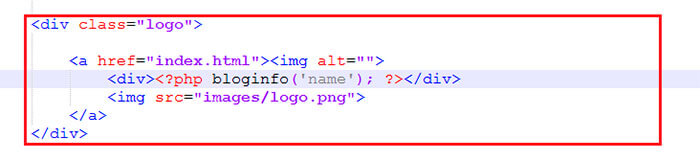

Почитать про неё в wp-kama здесь
С помощью этой функции можно вывести какую-то информацию о нашем сайте. Например, чтобы логотип сайта был привязан к редактированию из админки, то можно в ссылку создать див и в нём код php:
Обновим сайт и увидем вместо логотипа выведенный функцией имя нашего сайта.
Если что, то название сайта можно поменять в консоли вордпресса в меню - Настройка->Название сайта:
Тег <а>, в котором находится наш логотип ведёт на главную страницу указанием просто href="index.php", но нужно опять же путь сделать как надо в вордпрессе. Для этого подойдёт параметр url функции bloginfo():
Аналог этой функции, которая возвращает на главную страницу это функция home_url():
echo home_url();
В будущем все пути в тегах нужно заменять функциями, которые прелагает вордпресс.
Есть такая функция как the_custom_logo() - посмотреть про неё можно тут. Чтобы начать ею пользоваться, нужно включить поддержку логитапа в теме. Для этого в functions.php пишем код:
add_theme_support('custom-logo')
После этого в админке зайдём в Внешний вид -> Настроить -> Свойство сайта и там слева сверху появится область, в которой можно вставить логотип. Вставляем логотип точно также как и картинку. Дальше чтобы логотип появился, надо в том месте вёрстки где указан img с логотипом, нужно этот тег img удалить и на его месте написать код:
<php the_custom_logo(); >